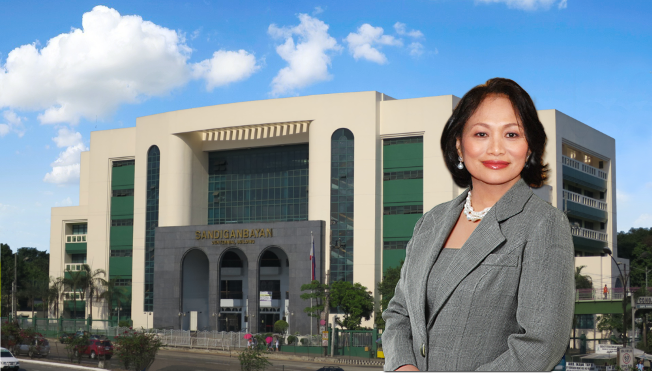
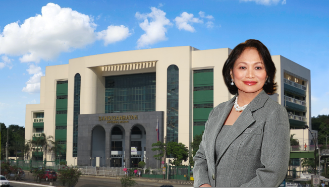

|  |
| HONORABLE PRESIDING JUSTICE AMPARO M. CABOTAJE-TANG |
| INAUGURAL MESSAGE |
- Home
- About Us

- Decisions/Resolutions
- Reports
- Contact Us
- GAD Corner
- Others
|  |
| HONORABLE PRESIDING JUSTICE AMPARO M. CABOTAJE-TANG |
| INAUGURAL MESSAGE |
Supreme Court | Court of Appeals | Court of Tax Appeals | Judicial and Bar Council
| Philippine Judicial Academy
| E-Library |
This site is managed and maintained by the Management Information Systems Division